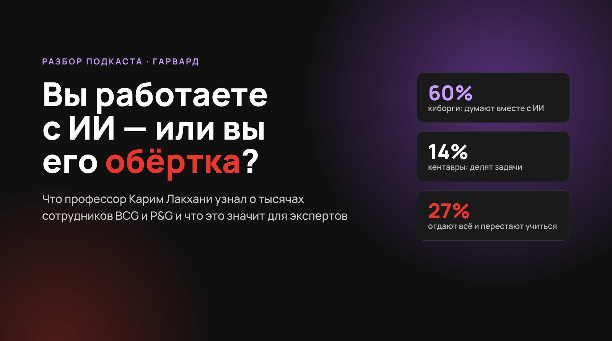

Посмотрела свежий выпуск подкаста Марины Могилко с Каримом Лакхани, профессором Гарвардской школы бизнеса. Он изучает, как ИИ меняет работу людей, и проверяет это не на мнениях, а на экспериментах с тысячами сотрудников BCG, Procter & Gamble и H&M.
Я 9 лет в маркетинге и сейчас каждый день собираю ИИ-агентов для экспертов. Поэтому смотрела выпуск с одним вопросом: что из этого касается психологов, коучей и всех, кто зарабатывает своими знаниями. Ниже главное из разговора и мой взгляд на это.
Коротко: 7 выводов из выпуска
- Людей заменяют не машины, а люди, которые умеют работать с ИИ. Мира, где модели работают совсем без человека, профессор пока не видит: модели нужно задавать направление и оценивать результат.
- Есть три способа работать с ИИ. Киборги думают вместе с моделью, кентавры делят с ней задачи, третьи отдают всё целиком. Хуже всех учатся третьи.
- Первый ответ модели почти всегда средний. Модель тянется к самому типичному варианту, поэтому Лакхани никогда не принимает её первый ответ.
- ИИ нужно заставлять спорить. Просите контраргументы, риски и три причины, почему идея может провалиться.
- Профессиональный вкус важнее умения писать промпты. Модель выдаст дизайн или текст, но отличить сильное от среднего можете только вы.
- Под ударом скорее среднее звено, чем новички. Молодые смело осваивают ИИ, а сильнее всего сопротивляются руководители, которые не хотят менять привычную работу.
- Главный вопрос к себе: когда выходит новая модель, ваш бизнес становится сильнее или исчезает?
Киборги, кентавры и те, кто отдаёт всё
В одном из экспериментов команда Лакхани наблюдала за 244 консультантами BCG, которым дали доступ к ИИ. Получилось три группы:
- Киборги, около 60%. Решают задачу вместе с моделью: спрашивают, уточняют, спорят и постоянно выясняют, что лучше получается у неё, а что у них.
- Кентавры, около 14%. Делят работу: это делаю я, это отдаю модели, а потом проверяю. Их риск в том, что границу проводят один раз и больше её не пересматривают, хотя модели становятся сильнее каждый месяц.
- Те, кто отдаёт всё, около 27%. Запускают задачу и больше в неё не вмешиваются. Именно они учились хуже всех: люди просто переставали думать.
Лакхани говорит, что «засыпать за рулём» начинают даже сильные специалисты с хорошей моделью. ИИ отвечает очень убедительно, и поверить ему легко.
Почему первый ответ ИИ никогда не бывает лучшим
Языковая модель предсказывает следующее слово, поэтому по умолчанию выбирает самый типичный вариант. Если вы отдаёте ей выбор и не следите за ним, получаете средний результат, а не тот, который выделит вас среди других.
Что профессор делает сам:
- просит модель найти три причины, почему предложенное решение может не сработать;
- просит искать тревожные признаки, риски и то, что вы не учли;
- говорит модели не экономить и разбираться глубже, чем она пошла бы сама;
- никогда не принимает первый ответ: либо возражает, либо заранее настраивает модель возвращаться к задаче и искать альтернативы.
Он прямо говорит, что увольнял тех, кто оправдывался словами «мне это выдал ИИ». Под работой всё равно стоит ваше имя.
Промт, который заставит ИИ спорить с вами
В выпуске упоминают подход, когда в системных инструкциях модели прописано: начинай с возражения. Вот моя версия для экспертов. Вставьте её в настройки проекта в Claude или ChatGPT.
Ты мой оппонент, а не помощник, который со всем соглашается. 1. Прежде чем ответить, найди, где я могу смотреть на задачу неправильно, и скажи об этом первым абзацем. 2. На любое моё решение приводи три причины, почему оно может не сработать. 3. У каждого своего утверждения отмечай, насколько ты уверен: уверен, скорее да, догадка. 4. Предлагай минимум два разных варианта, а не один средний. 5. Не экономь на ответе. Если задача важная, разбирайся глубже, чем обычно. 6. Если я соглашаюсь с тобой слишком быстро, спроси, что я проверил сам. Я эксперт в своей области. Мне нужен спарринг-партнёр, а не готовый ответ.
Вкус важнее промптов
Сейчас один человек может сделать продукт целиком: и дизайн, и тексты, и тестирование. Но Лакхани задаёт неудобный вопрос: а есть ли у этого человека профессиональный вкус? Модель предложит дизайн, только вы получите средний вариант, если сами не понимаете, каким он должен быть.
Его совет: сначала разберитесь в основах с помощью модели, а потом выбирайте направление сами. Он ссылается на мысль Стивена Вольфрама: интегралы стоит научиться считать самому, а следующие сотни уже можно отдать машине и смотреть на закономерности.
Кого ИИ заменит первым
Принято бояться за новичков. Профессор с этим не согласен: молодые бесстрашно пробуют ИИ и быстро создают новое. В зоне риска, по его наблюдениям, скорее среднее звено, люди 35–55 лет, которые не хотят менять привычную работу. При этом те, кто в том же возрасте готов учиться вместе с молодыми, уходят далеко вперёд.
Ещё одна цифра из исследования: внутри одной компании самые активные пользователи ИИ работают с ним в 10–20 раз больше, чем середина. Разрыв только растёт. Лакхани сравнивает это с эскалатором и плоской дорожкой в аэропорту: середина едет прямо, лидеры поднимаются.
Главный вопрос: вы не обёртка вокруг модели?
Если ваша работа сводится к тому, чтобы скопировать ответ модели и вставить его в документ, такой работы больше нет. Тот же вопрос Лакхани задаёт юрфирмам и компаниям: если вы просто обёртка вокруг чужой модели, зачем вы нужны клиенту?
Проверка простая, её в выпуске приводят со ссылкой на Грега Брокмана из OpenAI. Спросите себя: когда выходит новая, более сильная модель, ваш бизнес становится сильнее или исчезает?
Мой взгляд: что это значит для психолога и эксперта
Я каждый день вижу два типа экспертов. Одни просят ИИ написать пост и публикуют то, что он выдал. Это и есть те самые 27%: посты выходят гладкими, средними и одинаковыми у всех. Подписчики это чувствуют, хотя и не всегда могут объяснить.
Другие используют ИИ как команду ассистентов, но смысл, опыт и голос оставляют своими. Именно поэтому в своих ИИ-агентах для каруселей я сделала так, что агент не придумывает хуки сам: берёт только те, что уже залетели, а весь остальной текст пишет голосом эксперта и запоминает каждую его правку. Ваш опыт с клиентами модель не заменит. Модель сильнее в упаковке и скорости, а вы — в смысле.
Если вы психолог, ваш вкус — это то, как вы понимаете людей. Его нельзя отдать модели, но можно усилить: пусть ИИ находит темы, упаковывает и проверяет, а вы решаете, что из этого правда и что нужно вашим клиентам.
Что я бы сделала на этой неделе:
- Поставьте промт-оппонент выше в настройки проекта и спорьте с ИИ хотя бы над одним постом в день.
- Не публикуйте первый вариант. Просите три разных и выбирайте сами.
- Соберите 5–10 своих лучших текстов и дайте их модели как образец голоса.
- Выпишите, какие задачи вы уже отдали ИИ, а какие делаете сами. Пересматривайте этот список раз в месяц.
- Задайте себе вопрос Брокмана про свой бизнес и честно ответьте.
Частые вопросы
Кто такие киборги и кентавры в работе с ИИ? Так в исследовании Гарварда и BCG называют два подхода. Киборги решают задачу вместе с моделью и постоянно с ней спорят. Кентавры делят задачи: часть делают сами, часть отдают ИИ и проверяют.
Заменит ли ИИ психологов и экспертов? По данным Карима Лакхани, заменяют не машины, а люди, которые работают с ИИ лучше. Опыт и профессиональный вкус остаются за человеком, но тем, кто не освоит инструменты, будет всё сложнее.
Почему ответы ИИ получаются шаблонными? Модель по умолчанию выбирает самый типичный вариант. Просите несколько разных вариантов, контраргументы и давайте свои тексты как образец голоса.
Как заставить ChatGPT или Claude не соглашаться со всем? Пропишите в настройках проекта, что модель должна начинать с возражений, приводить три причины против вашего решения и отмечать свою уверенность. Готовый промт есть в статье выше.
Полный выпуск: «Профессор Гарварда: от ИИ пострадают совсем не те, о ком вы думаете», канал Марины Могилко, 45 минут.
Хотите, чтобы ИИ писал вашим голосом, а не средним?
Про агентов, промты и то, как я продвигаю экспертов с помощью Claude, пишу в Telegram-канале. А готовые агенты для каруселей можно посмотреть в деле.
Читать Telegram-канал → ИИ-агенты для каруселей